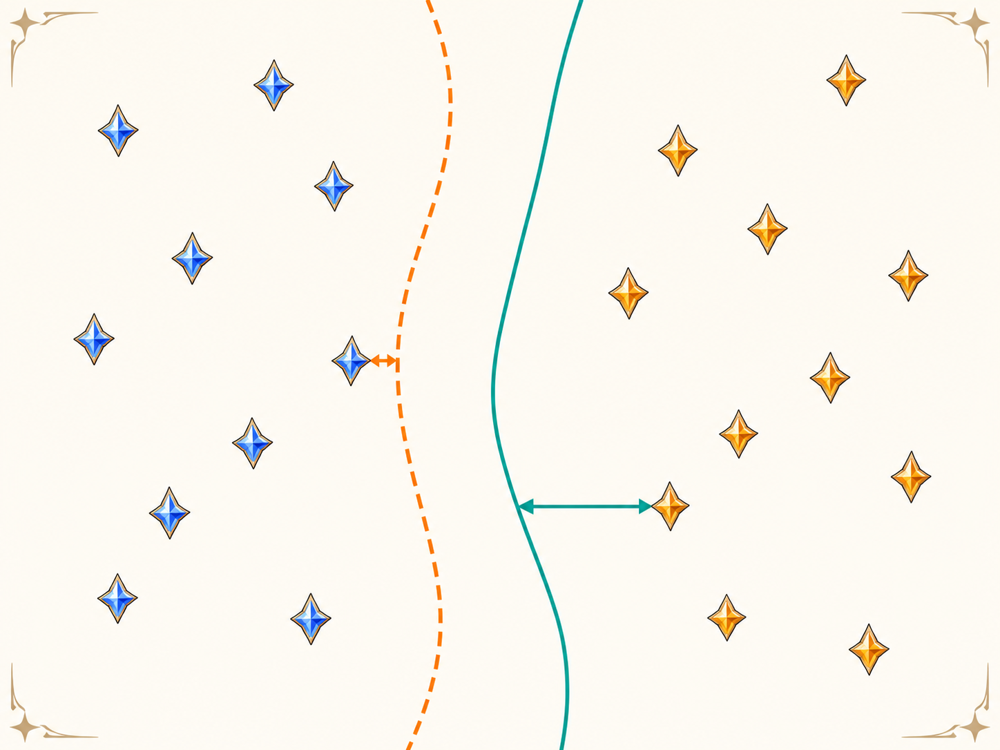

第 8 讲 · SVM 与核方法
都能分对，哪条分界线更合适？
给同一批样本画两条分界线。如果两条线都能分对训练样本，你会选哪一条？
图中的蓝色和金色晶矿分别代表两类样本。橙色虚线紧贴一颗蓝色晶矿，稍微向它挪动，就可能把它分到另一类。蓝绿色实线在两类晶矿之间留出了更多余量。因此，在这两条线里，我们会优先选蓝绿色实线，因为它离最近的晶矿更远。
支持向量机（Support Vector Machine，SVM）把这个直觉变成了最大间隔的目标。两类样本能用直线分开时，先量每条候选直线到最近训练点的距离，再选这个距离最大的直线。后面会看到，核函数也能让 SVM 画出弯曲的边界。
贯穿案例：沿用第2、6讲的手写数字，先区分1和7，再识别0–9。
